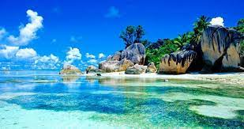

The Seychelles are an archipelago of legendary beauty in the Indian Ocean, just south The Seychelles islands are so much more than sun, sea and sand and our new interactive map is your best guide to what fun awaits you on your holiday.If you’re planning a trip to the exotic islands, no need to stress about getting a physical copy of the Seychelles map, as it’s now available at your fingertips and is fully responsive for your mobile phone.
Start browsing to get details and exact location of accommodations, restaurants, car hires, attractions, beaches and other fun activities including breathtaking walks and trails.of the Equator and east of Kenya. Its 115 coral and granite islands, which are the peaks of a massive underwater plateau, star in countless tropical island fantasies and represent one of the world’s very last frontiers. Once your aircraft descends into the Seychelles International Airport, you know that you have arrived at a place of awe-inspiring scenery, with granitic mountain ranges clad in virgin jungle cascading down to hauntingly beautiful, palm fringed, with sand beaches. The Seychelles beckon discerning travelers to their shores, by offering adventure, romance and luxury resorts in pristine surrounds still untouched by man.
